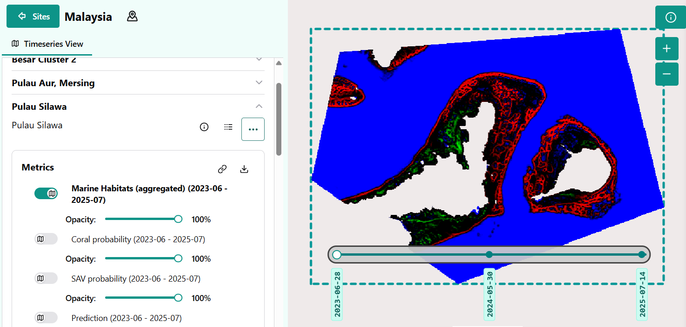
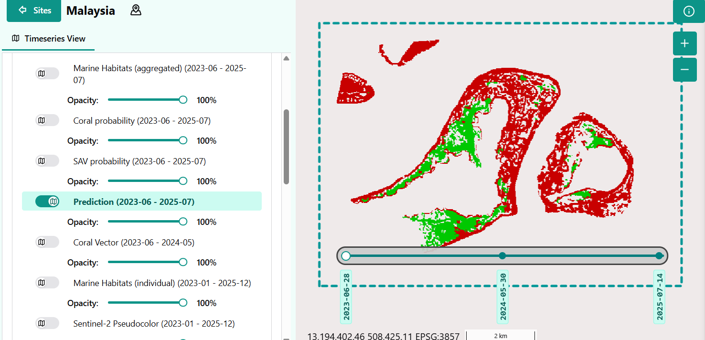

Habitat Extent: Key Considerations
Key runtime parameters
Necessary inputs:
Model
Two different models have been trained, corresponding to two different ecological regions. The first step is to select the appropriate model, while keeping in mind their limitations:
- A first model, trained in Malaysian coastal waters, is valid all year long, and detects corals as well as subaquatic vegetation.
- A second model trained on the coastlines of Prince Edward Island, in Canada, which has only been trained on summer imagery (running from June to September), and only detects subaquatic vegetation.
In the portal, the model is selected when choosing the region of interest.
-
Spatial extent- Area of interest, drawn as a polygon on the platform. Areas larger than a sentinel 2 tile (roughly 10.000 square km) might cause data download issues. When using the python code, it is defined as a four coordinates (West, SOuth, East, North), in latitude and longitude values.
-
Time period- Defines the time window for scene selection. The selection of the time frame is critical, and it is recommended to preview the Sentinel 2 imagery on a platform such as the Copernicus Browser to inspect the available scenes. The algorithm requires as much as possible clear atmospheric and water conditions to perform well, as mist, turbid or turbulent water, sun glint, and cloud shadows all make the classification more difficult.
Optional parameters
The following parameters are optional and have default values, but might be important to change for different areas of interest.
-
Maximum cloud cover percentage- Selects cloud-free or low-cloud Sentinel-2 observations. Only Sentinel 2 images with a lower cloud coverage are downloaded. By default, this percenatge is set to 40%.
-
SWIR band threshold- Threshold applied on the SWIR band (B11). Only pixels with values below this threshold are kept for the model to predict. This operation removes land, cloud-contaminated pixels, sun glint, turbid water and sensor artifacts. The lower this threshold, the harsher conditions are on the pixel quality. By default, its value is set to 250.
-
SAV probability threshold- The model's main output are class probabilities, for water, corals and SAV. Only pixels with predicted SAV probability higher than this threshold are considered to contain SAV. This threshold allows increased control on the predicted SAV patches, by allowing a more conservative prediction by increasing this threshold, or by detecting more potential SAV patches by lowering it. The probabilities are multiplied by 10.000 and range between 0 and 10.000. The default trheshold is set at 5000.
Parameter reference
This section summarises the suggested configurable parameters available to users when running the Habitat Extent product.
| Parameter | Used for | Notes |
|---|---|---|
Bioregion model |
Classification model | Two available models, one trained in Malaysia, and the other in Canada. |
Spatial extent |
Defines the area of interest | Required input as a polygon drawn in the GUI or as polygon bounds in latitude and longitude. |
Time period |
Defines the temporal scope | Year or seasonnal window. |
Maximum cloud cover |
Maximum cloud cover percentage on queried Sentinel 2 images | Ranges from 0 (no cloud at all) to 100 (completely covered). It is by defult set at 40. |
SWIR threshold |
Threshold to apply on the SWIR band | Recommended range from 250 to 1000. |
SAV probability threshold |
Probability threshold for SAV to be detected, multiplied by 10.000 | Defaults at 5000. Recommended range from 4000 to 6500. |
Model outputs
Aggregated results
Aggregated results are obtained by averaging model prediction on each scene in the selected time-series, and are the main result of the model. This approach is more robust to the noise introduced by metereological conditions.
- The 3-bands probability map, saved as a Geotiff file, containing the Coral, SAV and water class probabilities in this order. It highlights in red high coral probabilities, in green, high SAV probabilities, and in blue, high open water probabilities. Pixels appearing in dark show areas where the model certainties are lower.

- A model classification (obtained by selecting the class with maximum probability) map, in GeoTiff format. It shows predicted coral in red and predicted SAV in green.

-
Probability maps for both SAV and coral, saved as GeoTiffs as well.
-
Binary mask maps for detected SAV and coral, based on the SAV threshold.
-
Vector file outlining all detected patches.
-
A Sentinel 2 composite image, which is a good reference ot look at when interpreting the results. This image is a mean composite of all Senitnel 2 images in the timeseries.
Per scene results
-
RGB probability prediction on every scene, which allows to have more insight on each scene's predictions, and potentially remove them from the set if they cause missclassifications.
-
Individual Sentinel 2 images, which can help understand the model predictions on individual images.
Environmental detectability
Selecting the imagery
Submerged habitat mapping depends strongly on turbidity, suspended sediment, water depth, light attenuation, sun glint, surface state, and seasonal water quality. Moreover, only areas outside of cloud or cloud shadow cover can correctly be interpreted. The main points to keep in mind while selecting the imagery to obtain the best possible results are:
-
Select periods with stable clarity, little surface disturbance, and low cloud cover.
-
While clouds themselves can be removed from the imagery, cloud shadows are extremely difficult to remove above water, and can lead to false SAV detections. Avoid imagery with cloud shadows if possible.
-
The model trained for Canada was only trained on imagery obtained from July to September, and only imagery within this time window (or under close conditions) should be selected for prediction.
Bioregion representativeness
Model performance is highest where ecological and optical conditions resemble those represented in training. In contrast, the model will not give reliable results over areas with different ecological conditions on which it has not been trained, for example on coastlines of an ocean for a model trained in a bay or a lagoon, like the Canadian model.
Model and prediction
Model and features
All trained models are based on Random Forest classifiers, with different sets of hyperparameters, selected based on a geographical cross-validation. The models require the same set of features extracted from Sentinel 2 imagery. For the classification itself, the bands B02, B03, B04 and B08 from Sentinel 2 imagery (respectively corresponding to the blue, green, red and near infrared bands) were retained. We computed the several spectral indices based on these bands:
-
RDVI
-
Normalized Blue-Red index
-
Normalized Blue-Green index
-
Normalized NIR-Blue index
-
RVI
-
Red-Blue ratio
-
Blue-Green ratio
-
NIR-Blue ratio
-
NIR-Red ratio
Furthermore, we computed local statistics for all input bands, including the computed spectral indices:
-
Local mean using gaussian smoothing
-
Spatial statistics comparing each pixel to its surroundings
-
Structural (texture) features derived using multi-scale feature extraction
This approach allows for a pixel-wise classification, while giving the model access to some spatial information. Instead of simply running a classification on the imagery, the workflow is set up to return probability values for each class, giving users more information and control over the end results.
Post-processing
-
Probability thresholding over the different prediction classes.
-
A sieve filtering algorithm removes isolated pixels and improves spatial coherence of the habitats.